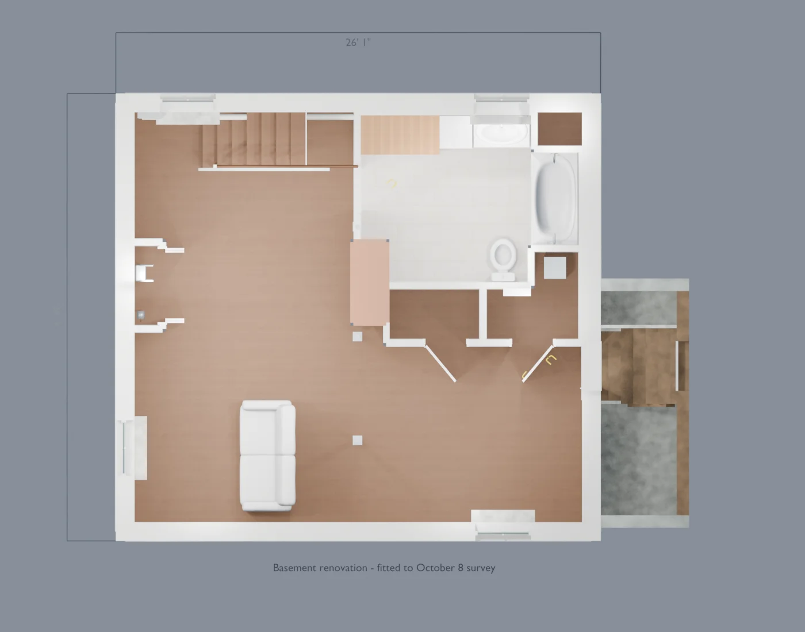
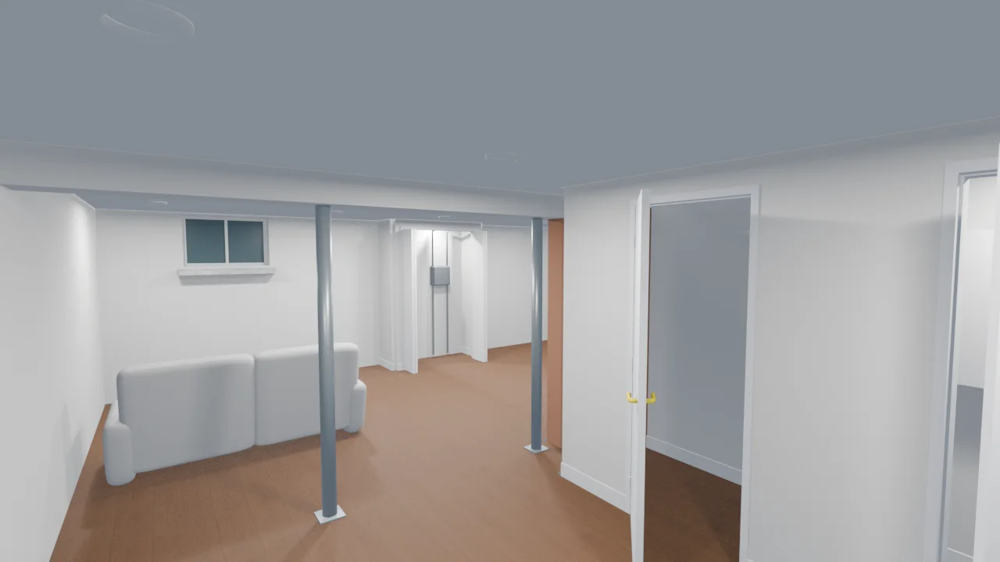
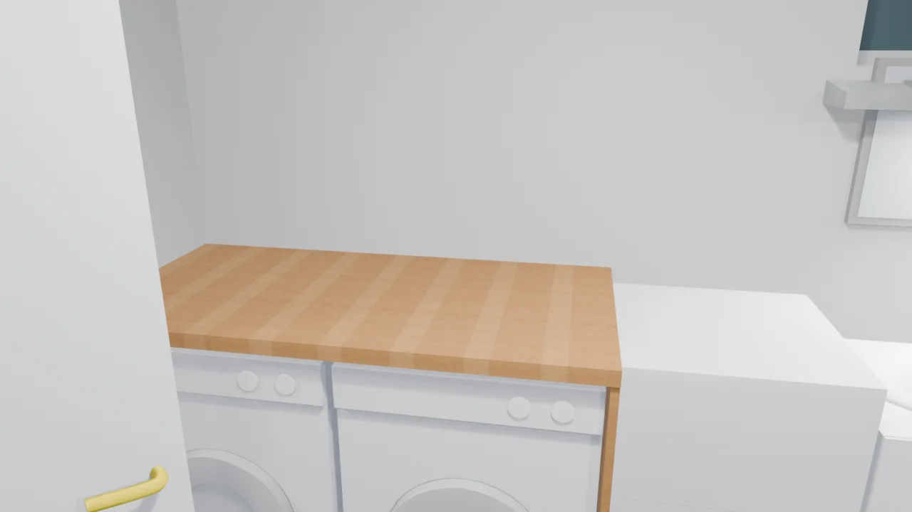
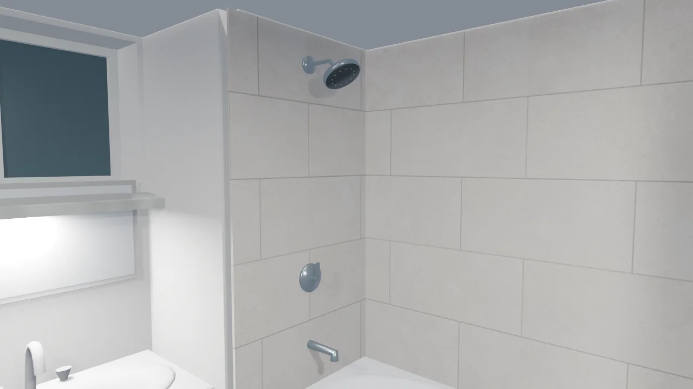

Basement renovation: Option 2
Drag to orbit · scroll or pinch to zoom · right-drag to pan
Model notes & downloads
Option 2 fitted to the measured basement, with living space, bathroom, laundry and utility closets.
Updated from the October 8 survey: 24′1″ × 22′1″ inside shell, 6′11½″ bare-joist ceiling limit, 6′4¼″ beam underside, ten kitchen treads, wider bulkhead stairs and existing posts. Gas and water meters remain in place inside an extended service closet. Flooring/ceiling thicknesses, meter access and service routes remain undecided. The bathroom door under the beam is provisionally 74″ high. The butcher-block counter assumes proposed 24″ front-loading appliances; the existing 27″ pair needs a cabinet change. The incoming pipe remains beneath the kitchen stairs; the west-window horizontal offset still needs measurement.
Related: Basement: existing unfinished
Rendered views & plans








